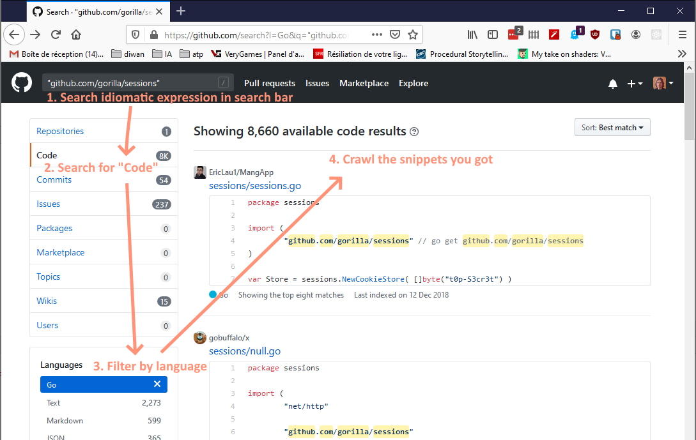

Dev back-end
Trucs et astuces
Rechercher des examples de code

NodeJS : autorestart server
Utiliser la commande suivante pour lancer le serveur :
npx nodemon ./myServer.js
Le serveur redémarrera à chaque modification
There are only two hard things in Computer Science: cache invalidation and naming things.
Il n'y a que 2 choses difficiles en informatique, l'invalidation de cache et nommer les choses.
- Utiliser un nommage ennuyeux, simple. Le stagiaire doit comprendre.
- Doit exprimer le but, l'objectif et comment il est utilisée.
- Être aussi précis et lisible que possible.
- Être cohérent, discuter des règles en équipe.
- Classe: Décrire sa responsabilité (découper la classe si plusieurs responsabilités).
- Fonction: Utiliser un verbe d'action (découper si plusieurs fontions).
- Ne pas répéter l'arborescence (ex:
form/Login, form/LoginForm
- Eviter les accronymes et les contractions
- Eviter le type (ex:
birthdayDatebirthdayStrbirthday)
- Utiliser l'anglais.